Homework 3: Path Tracer
Table of Contents
Overview
This homework builds a path tracer from the ground up: jittered camera rays through each pixel, ray–primitive intersection (including Möller–Trumbore for triangles), a BVH to cut down intersection cost, direct lighting via hemisphere sampling and light importance sampling, recursive global illumination with Russian roulette, and adaptive sampling so hard pixels get more work. The sections below mirror that pipeline and note what showed up in renders.
Part 1: Ray Generation and Scene Intersection
Ray generation and primitive intersection
The rendering pipeline starts with raytrace_pixel, which for each pixel shoots ns_aa camera rays through random jittered points within that pixel's area. Each ray gets generated in generate_ray by mapping the normalized image coordinates to a point on the virtual sensor plane sitting at Z = -1 in camera space. The sensor corners are defined by the field of view angles, so I just lerp the input (x, y) from [0, 1] into [-tan(hFov/2), tan(hFov/2)] × [-tan(vFov/2), tan(vFov/2)]. Then I transform that direction into world space using the camera-to-world matrix c2w and shoot the ray from the camera position. Once the ray is out in the world, est_radiance_global_illumination calls the BVH to find what it hits, and the BVH walks down to the leaf nodes and tests each primitive. Each ray carries a min_t and max_t that get updated as we find intersections, so we always end up with the closest one.
Triangle intersection
For triangle intersection I used the Möller–Trumbore algorithm, which I like to think of as just solving a linear system directly. The idea is that any point on the triangle can be written as p1 + u*(p2-p1) + v*(p3-p1) using barycentric coordinates, and any point on the ray is o + t*d. Setting these equal gives a 3×3 linear system with unknowns (t, u, v). Möller–Trumbore uses some Math54 (cramer's rule) to solve this efficiently with cross products and dot products, avoiding explicitly computing the plane equation at all. Once I get back (t, u, v), I check that u >= 0, v >= 0, and u+v <= 1 to confirm the hit point is actually inside the triangle, and that t falls within [min_t, max_t] to make sure it's a valid ray segment hit. If all that passes, I use w = 1-u-v as the third barycentric weight and interpolate the vertex normals to get a smooth surface normal at the hit point.
Results


Part 2: Bounding Volume Hierarchy
BVH construction
I construct a BVH tree recursively. At each step I compute the bounding box of all the primitives in the current range, then decide whether to make a leaf or split further. If the number of primitives is within max_leaf_size I just make a leaf and store the iterator range. Otherwise I need to split, and for that I first look at the extent of the bounding box along each axis and pick the longest one. I like to think of this as choosing the axis where the geometry is most spread out, since splitting there tends to produce children with less overlap and better culling. The actual split value is the average centroid position along that axis, which is simple and works well in practice. I then use std::partition to reorder the primitives so everything with a centroid below the split goes left and everything above goes right. One edge case I had to handle is when all centroids happen to be identical and partition puts everything on one side, which would cause infinite recursion. I handle that by just falling back to splitting the range in half by index.
Results
I rendered a few scenes to compare performance with and without BVH. Before, cow took about 80 seconds, and after it was instant. Without BVH, every ray has to test every single primitive, so render time scales as O(n) per ray. With BVH the tree reduces that to roughly O(log n) per ray by pruning entire subtrees early via the bounding box test.
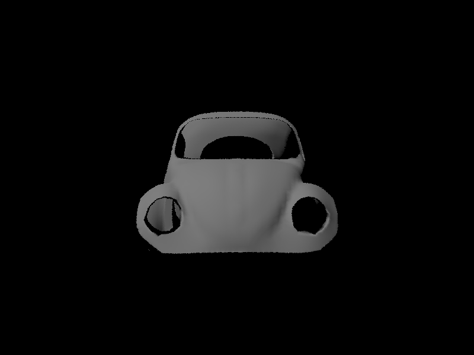
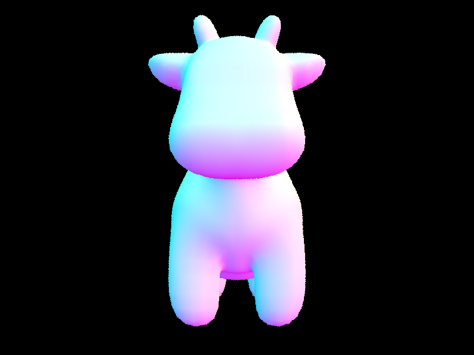
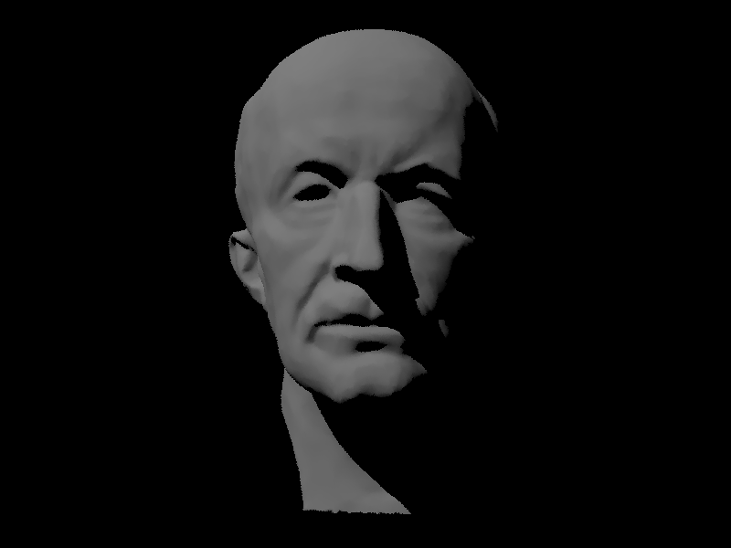
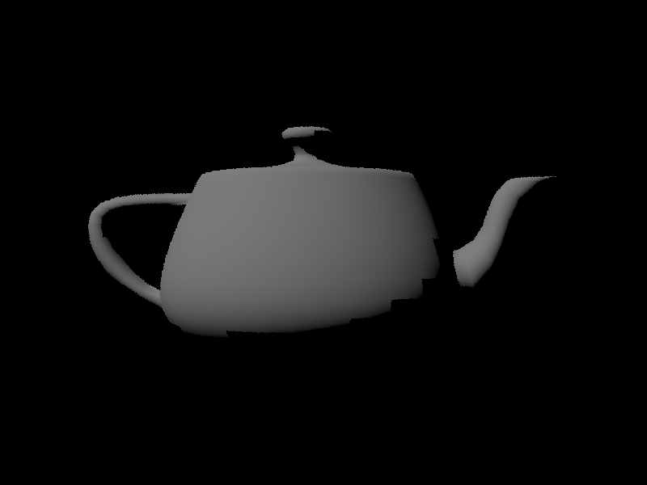
Part 3: Direct Illumination
For direct lighting I implemented two approaches: uniform hemisphere sampling and importance sampling over lights. Both are trying to answer the same question, which is how much light is reaching a surface point directly from light sources, but they go about it very differently.
Uniform hemisphere sampling
At each hit point I sample random directions over the hemisphere, cast shadow rays in those directions, and check if any of them hit a light source. If one does, I evaluate the rendering equation contribution from that direction using the BSDF and cosine term and accumulate it. I like to think of this as throwing darts blindly at the sky and hoping some land on a light. It works in principle but it's wasteful because most rays just hit walls or miss entirely, especially when lights are small. The result is very noisy unless you throw a lot of samples at it.
Importance sampling lights
Instead of sampling random directions and hoping they hit something useful, here I directly sample points on each light source. For each light I draw a sample, compute the direction to it, and cast a shadow ray to check visibility. If nothing is blocking it I accumulate the contribution. This is much smarter because essentially every sample is doing useful work. It also handles point lights correctly, which hemisphere sampling fundamentally cannot since a random direction will never exactly hit a point.
Results - both direct lighting estimators
The most striking different between importance and hemisphere sampling is noise and source. Hemisphere sampling is much more obviously noisy when compared to importance sampling, even with the same sample rate and light rays. Another observation of note is the banding of light near the top in the hemisphere variant, since you're sampling from each point on the hemisphere rather than just the light source. On the contrary, wehen looking at importance sampling there is no band on the light source (since you just render all the light from the source).
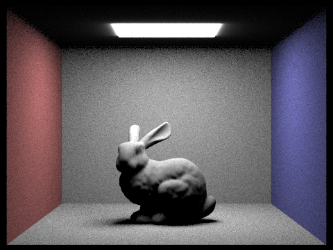
Results — soft shadows vs light rays
When increasing the number of light rays, we see a stark increase in the softness of the shadows. At lower numbers of rays (like 1 and 4), shadows are quite undersampled, whereas at l=64, we start to approach the realism of a true shadow with different levels of softness.
-l 1-l 4-l 16-l 64Part 4: Global Illumination
When I started thinking about the physics of light, it became obvious that light bounces off every object, and direct lighting that only captures light that comes straight from a source oversimplifies reality. When I first saw indirect lighting kick in I immediately understood why path tracing became the standard for offline rendering.
Implementation
At each surface intersection I compute one bounce of direct lighting, then sample a new direction from the BSDF, cast a new ray in that direction, and recursively gather the incoming radiance from wherever that ray lands. The contribution gets weighted by the BSDF value, cosine term, and divided by the pdf of the sampled direction, which is just the standard Monte Carlo estimator for the rendering equation applied recursively.
For termination I used Russian roulette rather than a hard depth cutoff. At each bounce I randomly decide whether to terminate the path with some probability, and scale up surviving paths to keep the estimator unbiased. I like to think of it as the path having to earn the right to keep going, and the ones that survive carry extra weight to compensate for their fallen peers.
Direct vs indirect
Rendering direct and indirect contributions separately really drives home what each one is doing. Direct only looks clear and sharp but weirdly flat, like a stage with harsh spotlights. Indirect only looks almost like ambient occlusion, soft and diffuse with colored light bleeding in from the walls. Together they produce something that actually looks like a real room. The colored light bouncing off the red and blue walls onto the bunny is almost entirely an indirect effect and it's what makes the image feel grounded and believable.
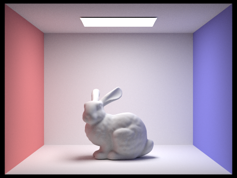
Bounce analysis
Looking at individual bounces in isolation, m = 0 is just the light source emission. m = 1 is direct lighting with sharp shadows. m = 2 is where things get interesting because you start seeing light fill in the shadowed regions as photons that bounced off the floor or walls arrive. m = 3 adds a bit more diffuse fill and the scene feels softer and more natural. The jump from m = 1 to m = 2 is the biggest visual change by far. That's where global illumination starts doing its thing. With accumulation each bounce adds a little more completeness and the scene gradually converges to something realistic. I think its nice to look through each bounce and imagine them stacking into the accumulated image
CBbunny: individual bounce terms (-m, not accumulated)
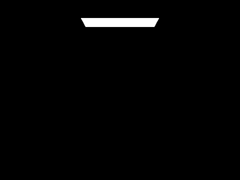
m = 0 (tentative)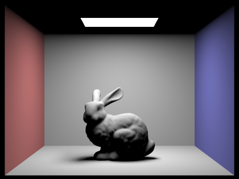
m = 1, not accumulated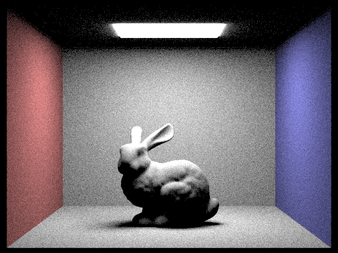
m = 2, not accumulated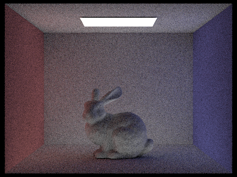
m = 3, not accumulated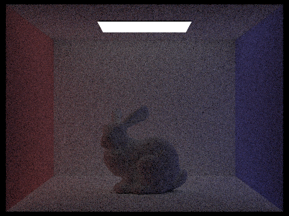
m = 4, not accumulated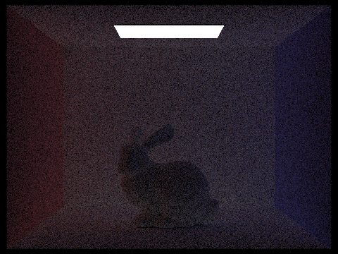
m = 5, not accumulatedCBbunny: accumulated vs unaccumulated per depth
Each pair: ..._o0 (not accumulated) vs ..._o1 (accumulated), 1024 spp. If you export m = 0 as separate Bunny_m0_o0 / o1 images, add that pair here — I only had splits for m = 1 … 5 on disk.
m = 1, not accumulatedm = 1, accumulatedm = 2, not accumulated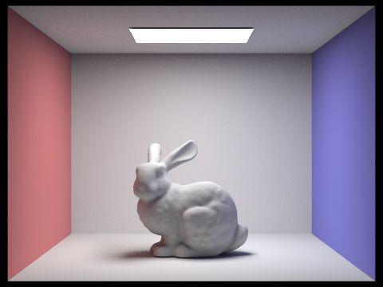
m = 2, accumulatedm = 3, not accumulated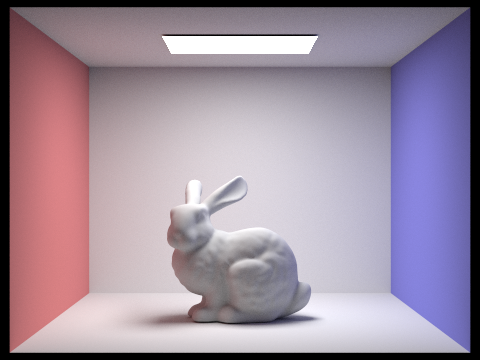
m = 3, accumulatedm = 4, not accumulatedm = 4, accumulatedm = 5, not accumulatedm = 5, accumulatedRussian roulette
Comparing max depth 3-4 to max depth 100 with Russian roulette, the images look very similar. This makes sense because deeper paths contribute exponentially less energy. The light has been multiplied by so many BSDF values and divided by so many pdfs that by bounce 3-4 the contribution is negligible. Russian roulette just makes this explicit by terminating those paths early and folding their tiny contribution into zero probabilistically, saving a lot of computation for no visible cost.
-m 0 + RR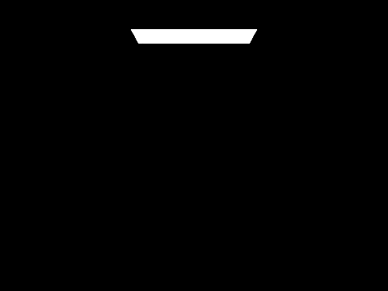
-m 1 + RR-m 2 + RR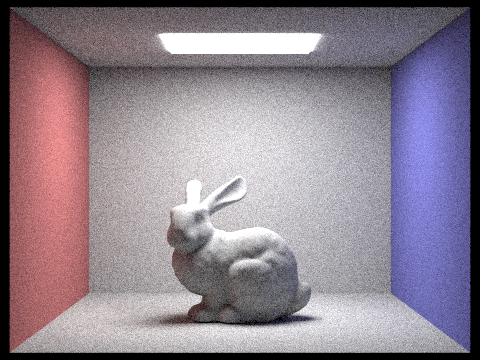
-m 3 + RR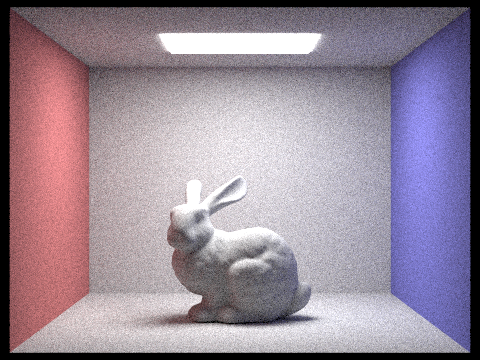
-m 4 + RR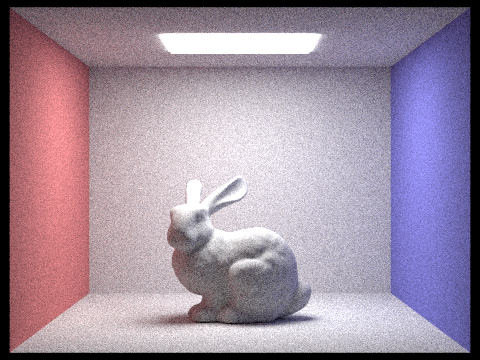
-m 100 + RRSamples per pixel
The noise progression from 1 spp to 1024 spp behaves exactly like you'd expect from Monte Carlo theory. 1 and 4 spp are uninterpretable. 8 to 16 you can start to see the bunny but its still unusable. 64 looks pretty clean. 1024 is essentially noise-free. The frustrating thing about Monte Carlo is that to halve the noise you have to quadruple the samples, which is why all the variance reduction techniques like importance sampling and adaptive sampling matter so much.
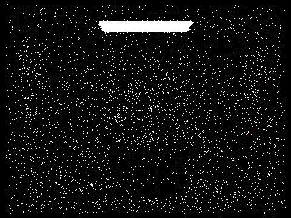
1 spp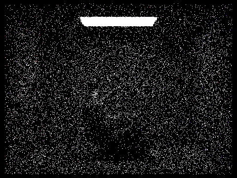
2 spp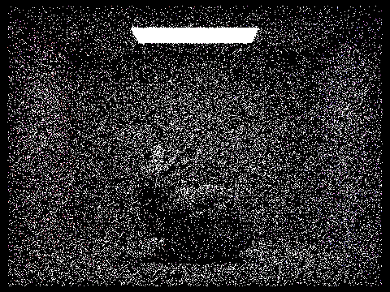
4 spp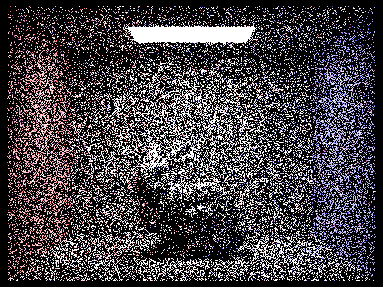
8 spp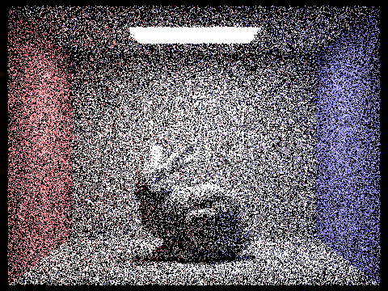
16 spp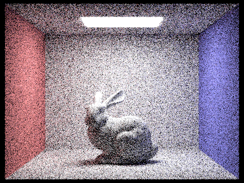
64 spp1024 sppPart 5: Adaptive Sampling
The insight behind adaptive sampling is that not all pixels are equally hard to render. A flat wall converges after just a handful of samples, but a sharp shadow boundary or a caustic might need hundreds. Spending the same budget on both is wasteful.
Implementation
For each pixel I track the running sum and sum of squares of sample luminances, which lets me compute the mean and variance on the fly. Every samplesPerBatch samples I estimate a 95% confidence interval as 1.96 * sqrt(variance / n) and check whether it falls below maxTolerance * mean. If it does, the pixel has converged and I stop sampling it early. Otherwise I keep going until hitting ns_aa.
Results
The sampling rate visualization makes the effect immediately obvious. Flat regions like walls and the ceiling show up blue because they converge in very few samples. Complex regions like shadow boundaries, the edges of the bunny, and areas with indirect lighting show up red because they need much more work to pin down. The final image looks comparable to a uniformly high-sample render but the adaptive version gets there faster by concentrating samples where they actually matter.
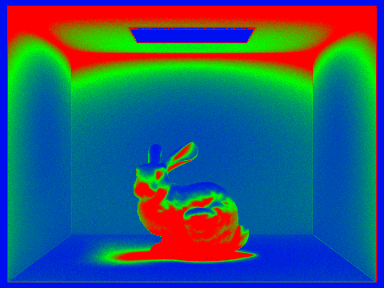
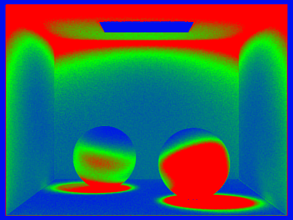
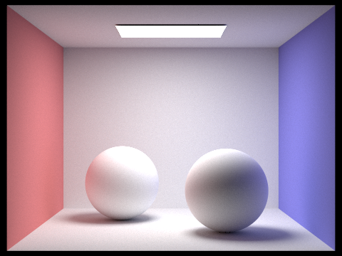